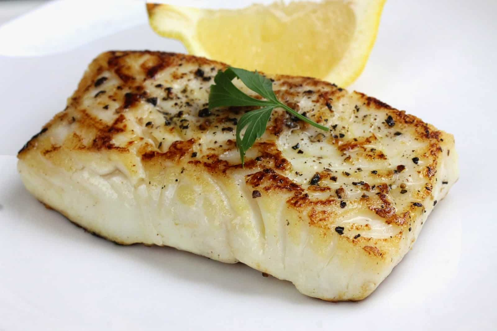

- Make sure the fish is a fish and the lemon is a lemon and not a discolored lime
- Know what surfaces are hot to avoid direct contact
- Please watch the fish like it's the most inportant thing in your life because in that moment it is
Now that we went over the basics please choose from our previous list

Again, here is the top three in no particular order
- Cod
- Flounder
- Chilean Sea Bass
Now choose from a endemic lemon species, all great choices
- Avalon Lemon
- Buddha's Hand Lemon
- Greek Citron
not acceptable substitutes
fianlly you have your ingredients follow the basic steps for your meal
- Turn the heat to medium and generally spread your olive oil by tilting pan
- Filet your fish of choice and lay gently on the pan
- Give a dash of salt and pepper and just let simmer for about a few minutes
- Flip gently and repeat step 3
- Take out of the pan with a spatula and serve on a plate
- Now top with cilantro and lemon and enjoy
Market Reccomndation in Brookyln NY
Union Market
An idea how Chilean Sea Bass make it to your plate
Sea Bass Charter
Website design and concept created by Aaron Solarz